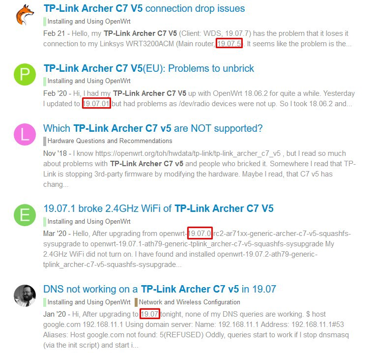
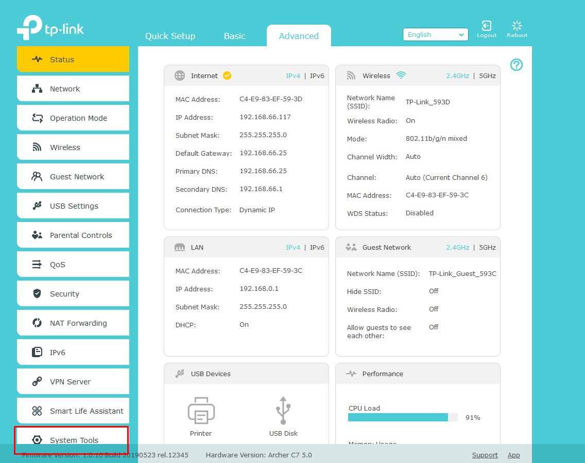
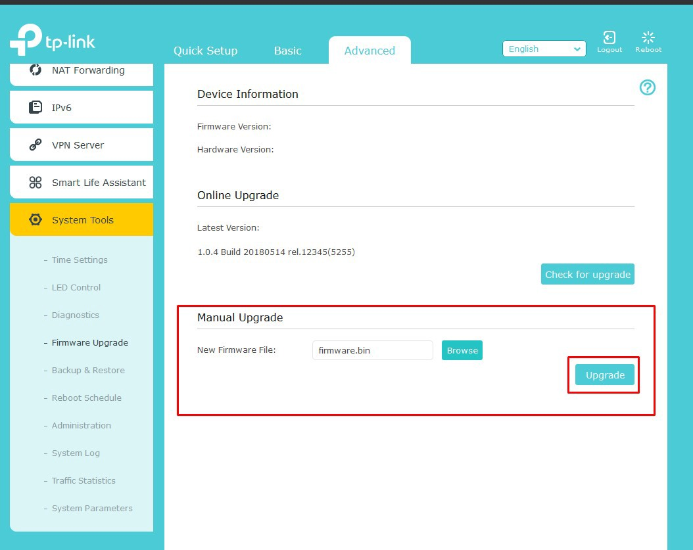

Install OpenWrt on the TP-Link Archer C7 V5 (2021).
4/8/2021
Disclaimer
This guide is a little outdated, you should use OpenWrt version 21. I have created an updated Guide here.
The Technical Details
Techdata: TP-Link Archer C7 AC1750 v5
(If you don´t want to read all of this in short it means that the Router should have enough power to run current OpenWrt versions.)
The Problem with the Versions
The Archer C7 is supported by two major versions of OpenWrt: Version 18 and 19. But in the Forum for the Archer C7 are some threads that point out Issues with the latest release. So I am going to use the Router with Version 18 because it seems more stable.

The right Firmware Image
When installing OpenWrt for the first time you search for a Firmware image that looks like that:
openwrt-19.07.7-ath79-generic-tplink_archer-c7-v5-squashfs-factory.bin
The place to search for the right Firmware is on the OpenWrt page of the router, but because I don´t want the latest version I need to search on the Download Server:
Version 19: https://downloads.openwrt.org/releases/19.07.7/targets/ath79/generic/
Version 18: https://downloads.openwrt.org/releases/18.06.9/targets/ar71xx/generic/
Version 18 alternative:
The Latest Version I have found was: https://downloads.openwrt.org/releases/18.06.9/targets/ar71xx/generic/openwrt-18.06.9-ar71xx-generic-archer-c7-v5-squashfs-factory.bin
After you have the right image you need to rename it to:
firmware.bin
Flashing the Firmware (Web interface Methode)
I am going to use the Web interface method because it is stable enough on my Stock firmware version.
Connect to the Router via Wifi and set up a Password. After that, you can connect with an Ethernet Cable and log in. (The Stock Web interface is located here: 192.168.0.1)
(The Images Below are from the TP-Link Emulator)
You just need to go to Advanced > System Tools > Firmware Upgrade
Step 1:

Step 2: 
Then select the firmware.bin and click on upgrade. This process can take up to 5 Minutes. Step 3,4 and 5: 
After that, you just need to go to http://192.168.1.1 and there is the Web interface.
The OpenWrt Webinterface LuCI: